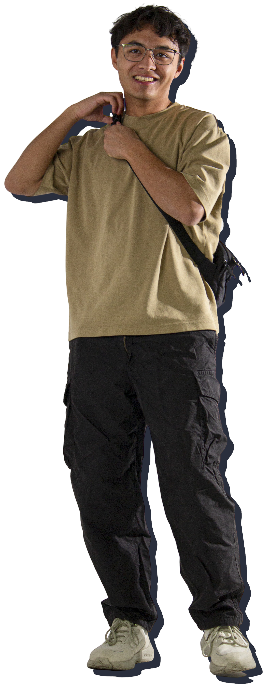

// Attending the University of Calgary
Currently a Computer Science Masters student at the University
of Calgary passionate about all things tech.
I've always been fascinated by computers and games, tinkering with scripts, game servers, and the technical side of things that casual users overlook. This curiosity led to my interest in programming with a special interest in game development, VR, XR, and AR. I’m passionate about them and hope to see them become mainstream as I think there is a lot of potential. I was an early adopter of Oculus and have been excited to see how immersive technology has been evolving.
Beyond gaming and VR, my goal is to build tools and applications that improve people’s quality of life through good design. I’m particularly interested in how AI can be used in meaningful, practical ways rather than just as a novelty. My goal is to integrate these interests creating innovative experiences that merge technology with real-world utility.
I have experience working with Java, Python, C, C#, C++, Swift and Blueprint, always looking to expand my technical knowledge. Throughout my undergraduate degree I maintained a strong academic record, earning a place on the Faculty of Science Dean's List every year and graduating with distinction.
Outside of coding, I love to get outdoors through travelling, and a big part of that is hiking in the Rocky Mountains. I’m involved in Valorant esports, FPV drones, and videography. Whether competing, capturing unique perspectives, or experimenting with emerging tech, I love pushing boundaries and learning along the way.
